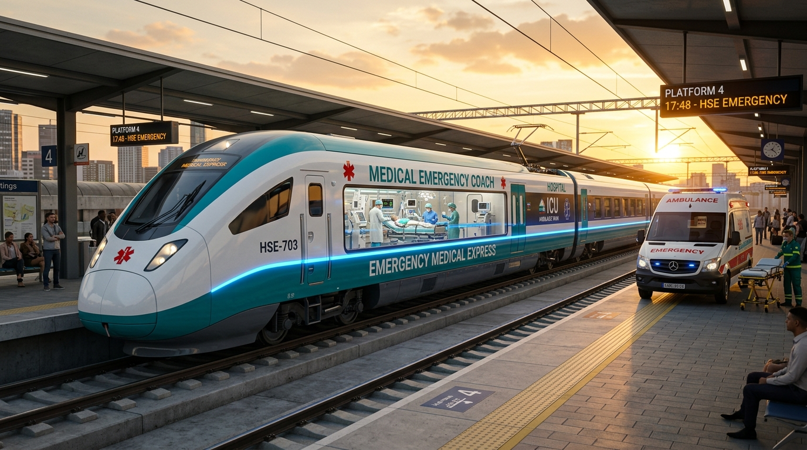

A groundbreaking healthcare solution adding 1 specialized, ICU-equipped medical coach (Coach M-1) to express trains. Transporting emergency patients between Tier-2 cities and Tier-1 metro hospital hubs with on-board doctors, continuous ventilators, and piped oxygen.

Specially engineered to provide continuous intensive hospital care during long-distance inter-city patient transfers.
Fitted with ICU transport ventilators, multi-parameter vitals monitors, defibrillators, piped oxygen, and infusion pumps.
Every coach operates with certified Critical Care Doctors, ICU Nurses, and Emergency Technicians continuously on duty.
High-speed rail corridors link tier-2 regions directly to premier tertiary medical hubs in Mumbai, Delhi, Bengaluru & Chennai.
Priority green-corridor rail dispatch, live telemetry tele-consultation with recipient hospitals, and platform ambulance bay links.
Democratizes critical inter-city transfer at roughly 10% the cost of commercial air ambulances, with subsidized health mission fares.